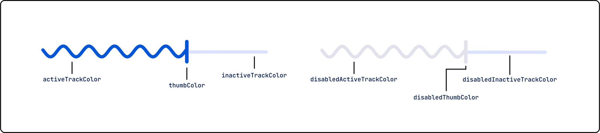
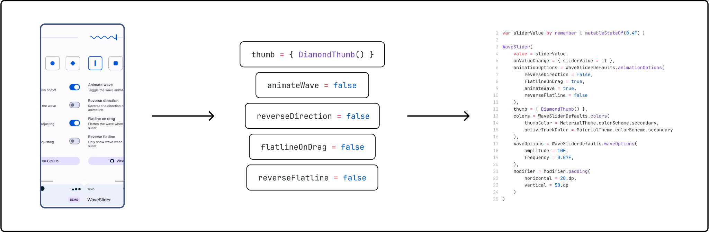

WaveSlider
Jetpack Compose Library
November 2023 - October 2024
What is WaveSlider?
WaveSlider is a Jetpack Compose library I created to introduce a unique, wavy slider component inspired by the visual style seen in some early Material Design 3 previews. While this aesthetic was never released in the official design system, I wanted to give developers the ability to use that style in their own apps through a clean, flexible implementation. The result is WaveSlider, a lightweight and fully customizable component written in Kotlin and designed to be easily integrated into Compose-based Android applications. Since publishing the library on GitHub, it has gained traction with over 100 stars and has been shared across developer forums and open-source projects.
Implementation
The core of the component was built entirely from scratch using low-level Compose graphics APIs such as Canvas, giving me full control over the rendering of the wave pattern, thumb, and track elements. I designed WaveSlider to be modular and adaptable: developers can change the wave amplitude, thumb design, animation behavior, direction of motion, and more. Throughout the process, I placed a strong emphasis on visual consistency and responsiveness across themes, adapting to Material 3 color guidelines while still allowing users to change depending on their product branding.
Documentation
To support adoption and make the library approachable for developers of all levels, I wrote and published detailed documentation on the project’s GitHub Wiki. This documentation walks users through the installation and setup process, outlines each customizable parameter, and provides visual examples of different states and configurations. I also included a series of code samples that demonstrate how to implement WaveSlider in a real-world UI and customize its behavior through various Compose modifiers.
Collaborative & open source
Although I implemented the majority of the library on my own, WaveSlider is fully open-source and has benefitted from community contributions. I’ve reviewed and merged feature pull requests, fixed bugs reported by users, and responded to support questions submitted through GitHub Issues. Maintaining this library has given me valuable experience in managing a collaborative project, ensuring code quality, and evolving the tool based on real-world developer feedback.
Demo application
In addition to documentation, I created a full-featured demo application that showcases the WaveSlider component in action. This app allows users to interact with the slider in real time and observe the effects of different parameter changes, such as enabling animation or reversing the wave direction. The demo helps potential adopters evaluate the library’s fit for their project without writing any code themselves, and it also serves as a helpful resource for testing and debugging.
Takeaways
Overall, this project allowed me to take a small visual idea and turn it into a complete open-source tool that’s useful, polished, and broadly applicable. Through WaveSlider, I gained deeper experience in Compose, Kotlin, and API design, and developed strong skills in documentation writing, open source collaboration, and interface implementation.